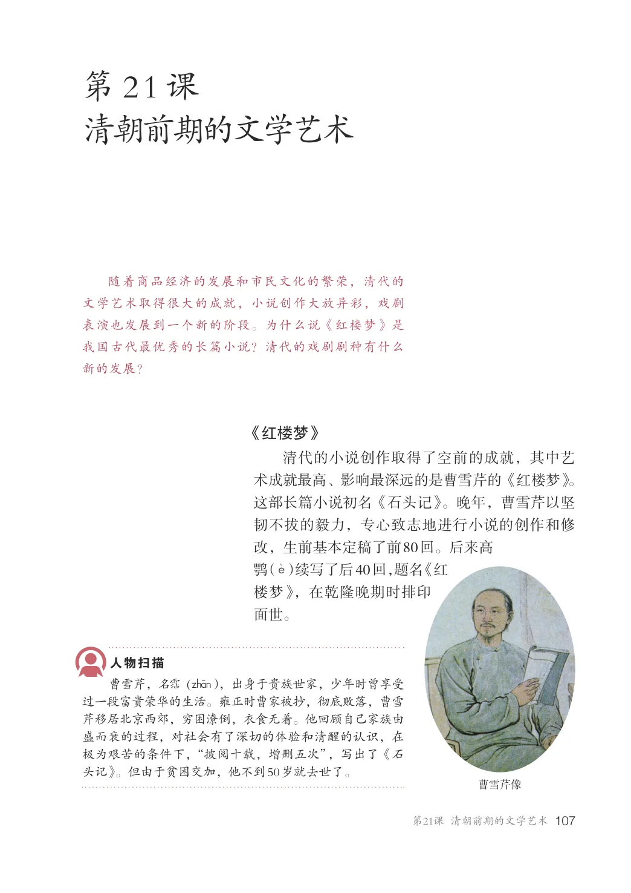
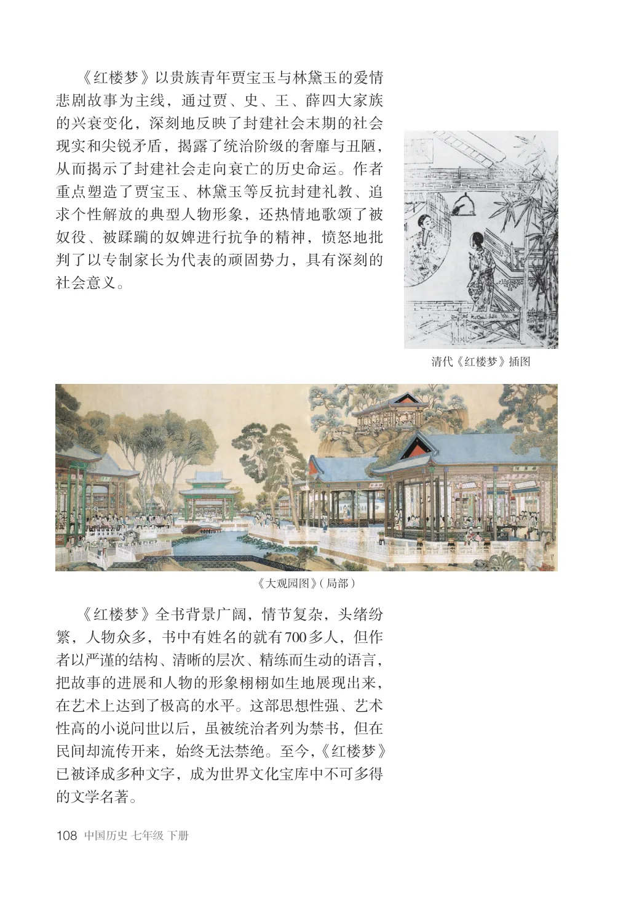
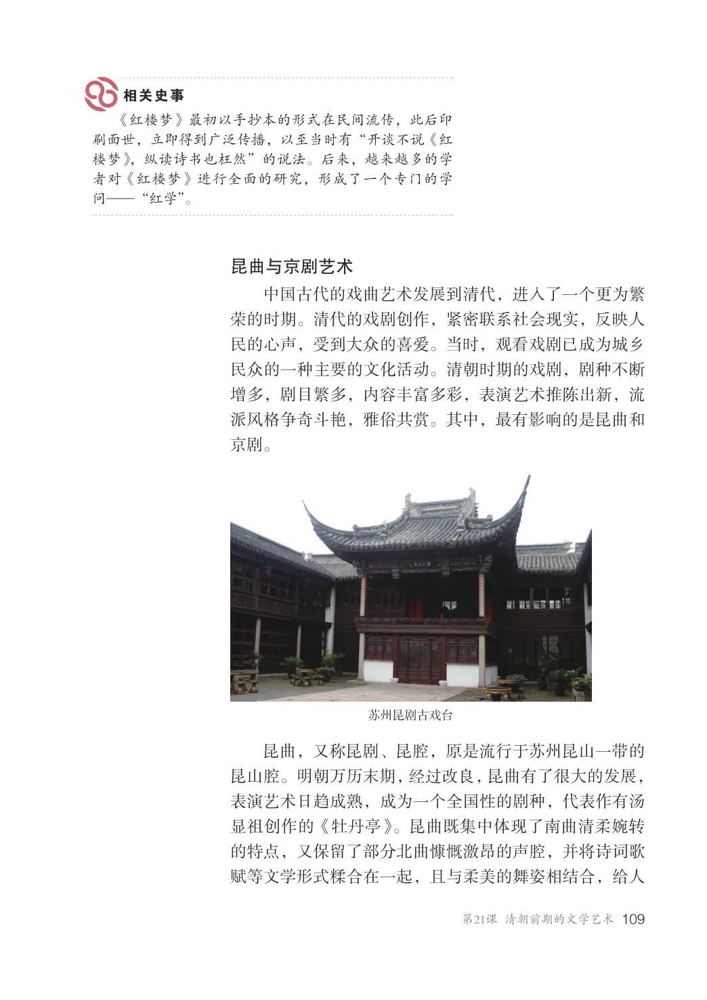
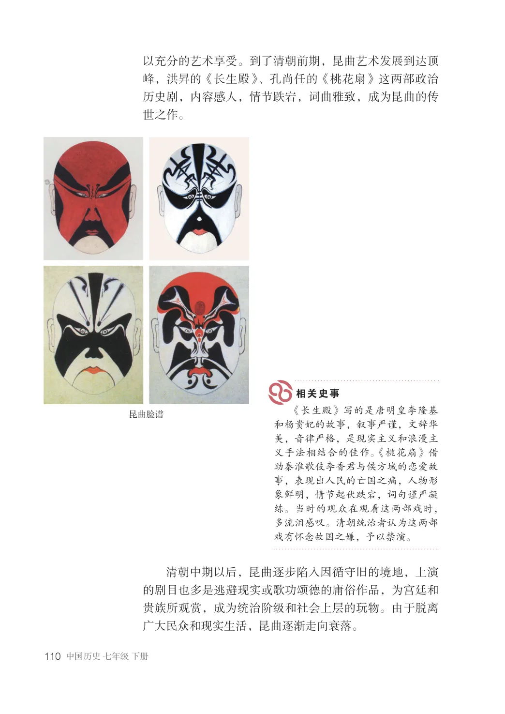
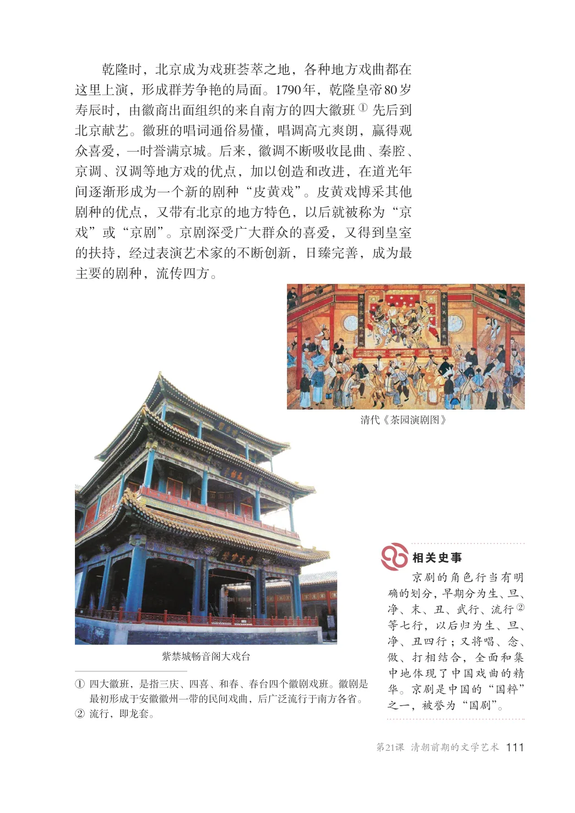
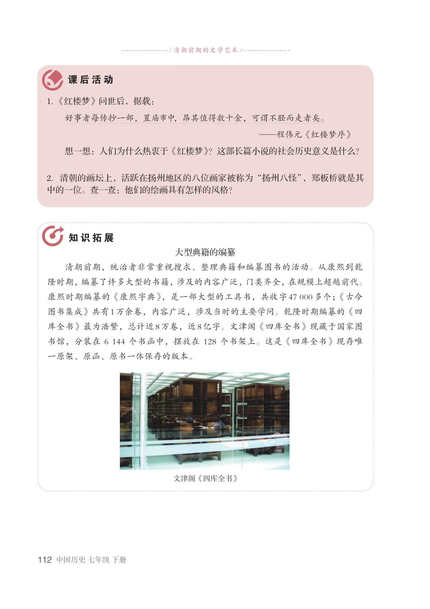

第3单元 · 教材第 107–112 页
第21课 清朝前期的文学艺术
文字版依据教材 PDF 文本层整理；复杂地图、图表及版面关系请以右侧教材原页为准。
随着商品经济的发展和市民文化的繁荣，清代的文学艺术取得很大的成就，小说创作大放异彩，戏剧表演也发展到一个新的阶段。为什么说《红楼梦》是我国古代最优秀的长篇小说？清代的戏剧剧种有什么新的发展？
《红楼梦》
清代的小说创作取得了空前的成就，其中艺术成就最高、影响最深远的是曹雪芹的《红楼梦》。这部长篇小说初名《石头记》。晚年，曹雪芹以坚韧不拔的毅力，专心致志地进行小说的创作和修改，生前基本定稿了前80回。后来高鹗（F）续写了后40回，题名《红楼梦》，在乾隆晚期时排印面世。
曹雪芹，名（zhQn），出身于贵族世家，少年时曾享受过一段富贵荣华的生活。雍正时曹家被抄，彻底败落，曹雪芹移居北京西郊，穷困潦倒，衣食无着。他回顾自己家族由盛而衰的过程，对社会有了深切的体验和清醒的认识，在极为艰苦的条件下，“披阅十载，增删五次”，写出了《石头记》。但由于贫困交加，他不到50岁就去世了。
曹雪芹像

《红楼梦》以贵族青年贾宝玉与林黛玉的爱情悲剧故事为主线，通过贾、史、王、薛四大家族的兴衰变化，深刻地反映了封建社会末期的社会现实和尖锐矛盾，揭露了统治阶级的奢靡与丑陋，从而揭示了封建社会走向衰亡的历史命运。作者重点塑造了贾宝玉、林黛玉等反抗封建礼教、追求个性解放的典型人物形象，还热情地歌颂了被奴役、被蹂躏的奴婢进行抗争的精神，愤怒地批判了以专制家长为代表的顽固势力，具有深刻的社会意义。
清代《红楼梦》插图
《大观园图》（局部）
《红楼梦》全书背景广阔，情节复杂，头绪纷繁，人物众多，书中有姓名的就有700多人，但作者以严谨的结构、清晰的层次、精练而生动的语言，把故事的进展和人物的形象栩栩如生地展现出来，在艺术上达到了极高的水平。这部思想性强、艺术性高的小说问世以后，虽被统治者列为禁书，但在民间却流传开来，始终无法禁绝。至今，《红楼梦》已被译成多种文字，成为世界文化宝库中不可多得的文学名著。

《红楼梦》最初以手抄本的形式在民间流传，此后印刷面世，立即得到广泛传播，以至当时有“开谈不说《红楼梦》，纵读诗书也枉然”的说法。后来，越来越多的学者对《红楼梦》进行全面的研究，形成了一个专门的学问—“红学”。
昆曲与京剧艺术
中国古代的戏曲艺术发展到清代，进入了一个更为繁荣的时期。清代的戏剧创作，紧密联系社会现实，反映人民的心声，受到大众的喜爱。当时，观看戏剧已成为城乡民众的一种主要的文化活动。清朝时期的戏剧，剧种不断增多，剧目繁多，内容丰富多彩，表演艺术推陈出新，流派风格争奇斗艳，雅俗共赏。其中，最有影响的是昆曲和京剧。
苏州昆剧古戏台
昆曲，又称昆剧、昆腔，原是流行于苏州昆山一带的昆山腔。明朝万历末期，经过改良，昆曲有了很大的发展，表演艺术日趋成熟，成为一个全国性的剧种，代表作有汤显祖创作的《牡丹亭》。昆曲既集中体现了南曲清柔婉转的特点，又保留了部分北曲慷慨激昂的声腔，并将诗词歌赋等文学形式糅合在一起，且与柔美的舞姿相结合，给人

以充分的艺术享受。到了清朝前期，昆曲艺术发展到达顶峰，洪的《长生殿》、孔尚任的《桃花扇》这两部政治历史剧，内容感人，情节跌宕，词曲雅致，成为昆曲的传世之作。
《长生殿》写的是唐明皇李隆基和杨贵妃的故事，叙事严谨，文辞华美，音律严格，是现实主义和浪漫主义手法相结合的佳作。《桃花扇》借助秦淮歌伎李香君与侯方域的恋爱故事，表现出人民的亡国之痛，人物形象鲜明，情节起伏跌宕，词句谨严凝练。当时的观众在观看这两部戏时，多流泪感叹。清朝统治者认为这两部戏有怀念故国之嫌，予以禁演。
昆曲脸谱
清朝中期以后，昆曲逐步陷入因循守旧的境地，上演的剧目也多是逃避现实或歌功颂德的庸俗作品，为宫廷和贵族所观赏，成为统治阶级和社会上层的玩物。由于脱离广大民众和现实生活，昆曲逐渐走向衰落。

乾隆时，北京成为戏班荟萃之地，各种地方戏曲都在这里上演，形成群芳争艳的局面。1790年，乾隆皇帝80岁寿辰时，由徽商出面组织的来自南方的四大徽班①先后到北京献艺。徽班的唱词通俗易懂，唱调高亢爽朗，赢得观众喜爱，一时誉满京城。后来，徽调不断吸收昆曲、秦腔、京调、汉调等地方戏的优点，加以创造和改进，在道光年间逐渐形成为一个新的剧种“皮黄戏”。皮黄戏博采其他剧种的优点，又带有北京的地方特色，以后就被称为“京戏”或“京剧”。京剧深受广大群众的喜爱，又得到皇室的扶持，经过表演艺术家的不断创新，日臻完善，成为最主要的剧种，流传四方。
清代《茶园演剧图》
京剧的角色行当有明确的划分，早期分为生、旦、净、末、丑、武行、流行②等七行，以后归为生、旦、净、丑四行；又将唱、念、做、打相结合，全面和集中地体现了中国戏曲的精华。京剧是中国的“国粹”之一，被誉为“国剧”。
紫禁城畅音阁大戏台
①四大徽班，是指三庆、四喜、和春、春台四个徽剧戏班。徽剧是
最初形成于安徽徽州一带的民间戏曲，后广泛流行于南方各省。②流行，即龙套。

/ 清朝前期的文学艺术/
1．《红楼梦》问世后，据载：
好事者每传抄一部，置庙市中，昂其值得数十金，可谓不胫而走者矣。
—程伟元《红楼梦序》想一想：人们为什么热衷于《红楼梦》？这部长篇小说的社会历史意义是什么？
2．清朝的画坛上，活跃在扬州地区的八位画家被称为“扬州八怪”，郑板桥就是其中的一位。查一查：他们的绘画具有怎样的风格？
大型典籍的编纂清朝前期，统治者非常重视搜求、整理典籍和编纂图书的活动。从康熙到乾隆时期，编纂了许多大型的书籍，涉及的内容广泛，门类齐全，在规模上超越前代。康熙时期编纂的《康熙字典》，是一部大型的工具书，共收字47000多个；《古今图书集成》共有1万余卷，内容广泛，涉及当时的主要学问。乾隆时期编纂的《四库全书》最为浩繁，总计近8万卷，近8亿字。文津阁《四库全书》现藏于国家图书馆，分装在6144个书函中，摆放在128个书架上。这是《四库全书》现存唯一原架、原函、原书一体保存的版本。
文津阁《四库全书》
